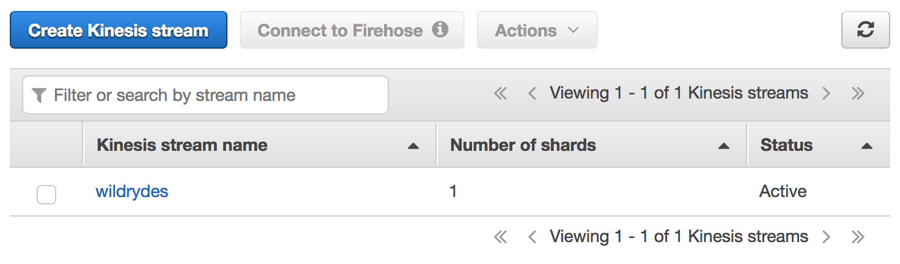
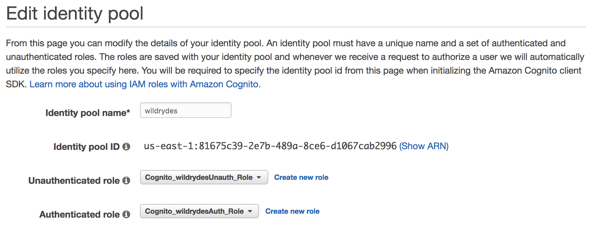
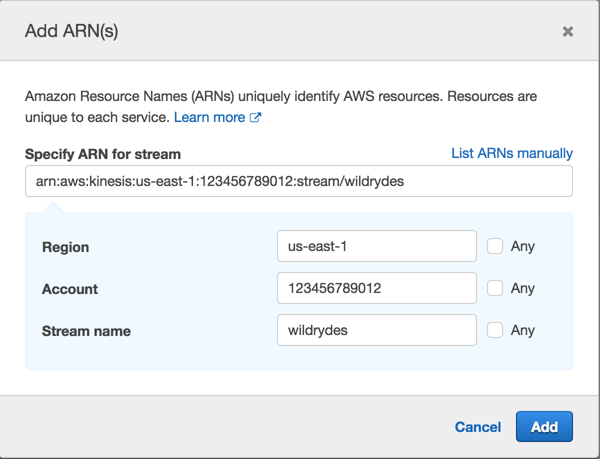
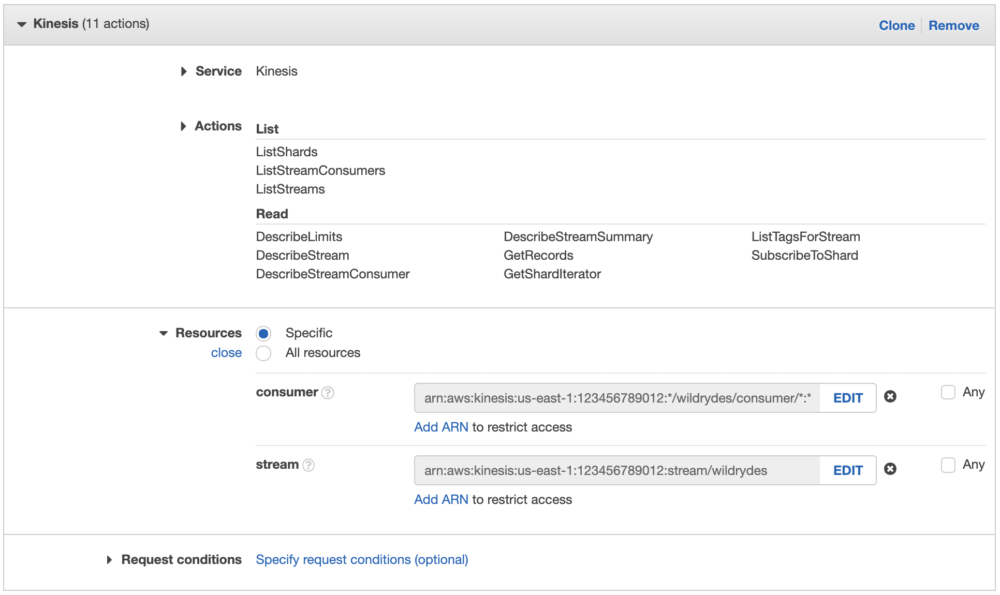
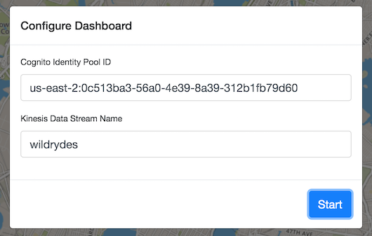
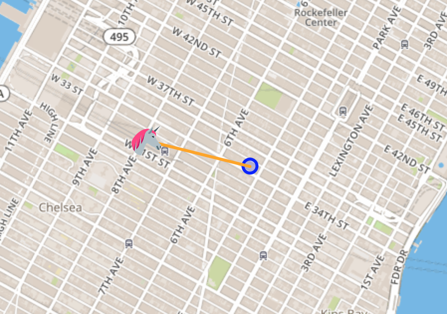
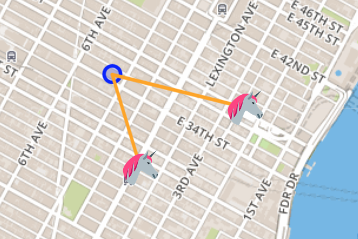

Serverless Data Processing on AWS
Real-time Streaming Data
In this module, you’ll create a Amazon Kinesis stream to collect and store sensor data from our unicorn fleet. Using the provided command-line clients, you’ll produce sensor data from a unicorn on a Wild Ryde and read from the stream. Lastly, you’ll use the unicorn dashboard to plot our unicorns on a map and watch their status in real-time. In subsequent modules you’ll add functionality to analyze and persist this data using Amazon Kinesis Data Analytics, AWS Lambda, and Amazon DynamoDB.
Overview
The architecture for this module involves an Amazon Kinesis stream, a producer, and a consumer.
Our producer is a sensor attached to a unicorn currently taking a passenger on a ride. This sensor emits data every second including the unicorn’s current location, distance traveled in the previous second, and magic points and hit points so that our operations team can monitor the health of the unicorn fleet from Wild Rydes headquarters.
The Amazon Kinesis stream stores data sent by the producer and provides an interface to allow consumers to process and analyze those data. Our consumer is a simple command-line utility that tails the stream and outputs the data points from the stream in effectively real-time so we can see what data is being stored in the stream. Once we send and receive data from the stream, we can use the unicorn dashboard to view the current position and vitals of our unicorn fleet in real-time.
Implementation
❗️ Ensure you’ve completed the setup guide before beginning the workshop.
1. Create an Amazon Kinesis stream
Use the Amazon Kinesis Data Streams console to create a new stream named wildrydes with 1 shard.
✅ Step-by-step Instructions
Go to the AWS Management Console, click Services then select Kinesis under Analytics.
Click Get started if prompted with an introductory screen.
Click Create data stream.
Enter
wildrydesinto Kinesis stream name and1into Number of shards, then click Create Kinesis stream.Within 60 seconds, your Kinesis stream will be ACTIVE and ready to store real-time streaming data.

2. Produce messages into the stream
Use the command-line producer to produce messages into the stream.
✅ Step-by-step Instructions
Switch to the tab where you have your Cloud9 environment opened.
In the terminal, run the producer to start emiting sensor data to the stream.
./producerThe producer emits a message a second to the stream and prints a period to the screen.
$ ./producer -region us-east-1 ..................................................In the Amazon Kinesis Streams console, click on wildrydes and click on the Monitoring tab.
After several minutes, you will see the Put Record (success count) graph begin to record a single put a second.
3. Read messages from the stream
✅ Step-by-step Instructions
Switch to the tab where you have your Cloud9 environment opened.
Hit the (+) button and click New Terminal to open a new terminal tab.
Run the consumer to start reading sensor data from the stream.
./consumerThe consumer will print the messages being sent by the producer:
{ "Name": "Shadowfax", "StatusTime": "2017-06-05 09:17:08.189", "Latitude": 42.264444250051326, "Longitude": -71.97582884770408, "Distance": 175, "MagicPoints": 110, "HealthPoints": 150 } { "Name": "Shadowfax", "StatusTime": "2017-06-05 09:17:09.191", "Latitude": 42.265486935100476, "Longitude": -71.97442977859625, "Distance": 163, "MagicPoints": 110, "HealthPoints": 151 }
4. Create an identity pool for the unicorn dashboard
Create an Amazon Cognito identity pool to grant unauthenticated users access to read from your Kinesis stream. Note the identity pool ID for use in the next step.
✅ Step-by-step directions
Go to the AWS Management Console, click Services then select Cognito under Security, Identity & Compliance.
Click Manage Identity Pools.
Click Create new identity pool.
Enter
wildrydesinto Identity pool name.Tick the Enable access to unauthenticated identities checkbox.
Click Create Pool.
Click Allow which will create authenticated and unauthenticated roles for your identity pool.
Click Go to Dashboard.
Click Edit identity pool in the upper right hand corner.
Note the Identity pool ID for use in a later step.

5. Grant the unauthenticated role access to the stream
Add a new policy to the unauthenticated role to allow the dashboard to read from the stream to plot the unicorns on the map.
✅ Step-by-step directions
Go to the AWS Management Console, click Services then select IAM under Security, Identity & Compliance.
Click on Roles in the left-hand navigation.
Click on the Cognito_wildrydesUnauth_Role.
Click Add inline policy.
Click on Choose a service and click Kinesis.
Click on Actions.
Tick the Read and List permissions checkboxes.
Click Resources to limit the role to the wildrydes stream.
Click Add ARN next to stream.
Enter the region you’re using in Region (e.g. us-east-1), your Account ID in Account, and
wildrydesin Stream name.
Click Add.

Click Review policy.
Enter
WildrydesDashboardPolicyin Name.Click Create policy.
6. View unicorn status on the dashboard
Use the Unicorn Dashboard to see the unicorn on a real-time map.
✅ Step-by-step directions
Open the Unicorn Dashboard.
Enter the Cognito Identity Pool ID you noted in step 4 and click Start.

Validate that you can see the unicorn on the map.

Click on the unicorn to see more details from the stream.

7. Experiment with the producer
Stop and start the producer while watching the dashboard and the consumer. Start multiple producers with different unicorn names.
Stop the producer by pressing Control + C and notice the messages stop and the unicorn disappear after 30 seconds.
Start the producer again and notice the messages resume and the unicorn reappear.
Hit the (+) button and click New Terminal to open a new terminal tab.
Start another instance of the producer in the new tab. Provide a specific unicorn name and notice data points for both unicorns in consumer’s output:
./producer -name BucephalusCheck the dashboard and verify you see multiple unicorns.

⭐️ Recap
🔑 Amazon Kinesis makes it easy to collect, process, and analyze real-time, streaming data so you can get timely insights and react quickly to new information.
🔧 In this module, you’ve created an Amazon Kinesis stream and used it to store and visualize data from a simulated fleet of unicorns.
Next
✅ Proceed to the next module, Streaming Aggregation, wherein you’ll build an application using Amazon Kinesis Analytics to summarize data from the stream every minute.